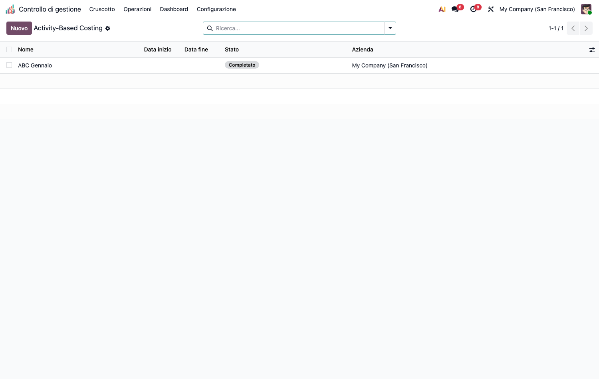
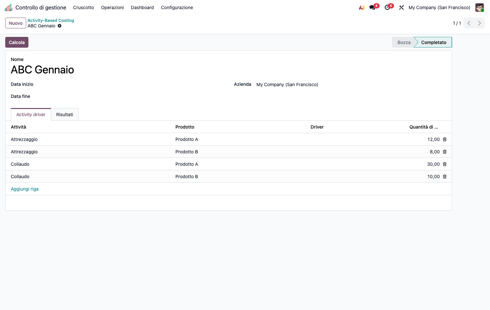
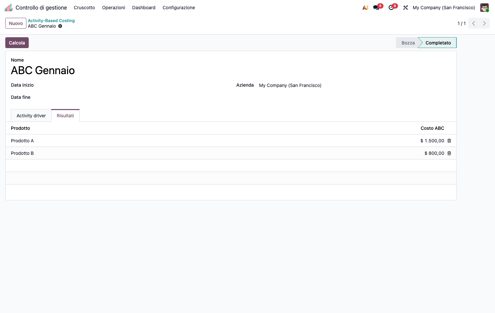

<section class="oe_container">
<div class="oe_row oe_spaced">
<div class="oe_span12">
<h1>CMC – Activity-Based Costing (cmc_abc)</h1>
<p>Modulo capillare della suite CMC. Dipende da <code>cmc_base</code> e <code>product</code>.</p>
<h2>Obiettivo</h2>
<p>Costeggiare i prodotti con l&#x27;<strong>ABC classico a due stadi</strong>:</p>
<ul><li><strong>Stadio 1</strong> – i costi delle risorse confluiscono nei <strong>pool di attività</strong> tramite il tag <code>Attività ABC</code> sulle righe analitiche.</li><li><strong>Stadio 2</strong> – ogni pool di attività si ribalta sugli <strong>oggetti di costo</strong> (prodotti) in proporzione alle <strong>quantità di driver</strong> consumate, con conservazione dei totali (<code>largest_remainder</code>).</li></ul>
<p></p>
<h2>Configurazione (step-by-step)</h2>
<ol><li>Installa <code>cmc_abc</code> (richiede <code>cmc_base</code>).</li><li>Vai in <strong>Configurazione › Anagrafiche › ABC Activities</strong> e crea le <strong>attività</strong> (es. <em>Attrezzaggio</em>, <em>Collaudo</em>) con codice e (opzionale) driver di default.</li><li><strong>Tagga i costi</strong>: nelle righe analitiche di costo (<em>Base di costo › Registrazione costi</em>) valorizza il campo <strong>Attività ABC</strong> per far confluire quel costo nel pool dell&#x27;attività (stadio 1).</li></ol>
<h2>Utilizzo (step-by-step)</h2>
<ol><li><strong>Operazioni › Activity-Based Costing › Calcolo ABC</strong> → <strong>Nuovo</strong>.</li></ol>
<p></p>
<ol><li>(Opzionale) imposta il periodo <em>Date From / Date To</em> per delimitare i pool.</li><li>Nel tab <strong>Driver attività</strong> aggiungi le righe <em>attività × prodotto × quantità driver</em> (quanto ogni prodotto consuma di ciascuna attività).</li><li>Premi <strong>Calcola</strong>. Il tab <strong>Risultati</strong> mostra il costo ABC per prodotto.</li></ol>
<p></p>
<h2>Note</h2>
<ul><li>I pool sono aggregati direttamente sulla colonna-tag (<code>_read_group</code>), non plan-aware: il tag attività è un&#x27;unica colonna sulla riga analitica.</li><li>I costi possono essere negativi: il pool è letto in valore assoluto.</li><li>Ricalcolo idempotente (lock <code>FOR UPDATE</code>, unlink+create).</li><li>Per l&#x27;evoluzione <strong>Time-Driven ABC</strong> (capacità, tariffa €/min, time equations, capacità inutilizzata) vedi il modulo <code>cmc_tdabc</code>.</li></ul>
</div>
</div>
</section>
